L29 - Range-Doppler and MTI#
Range-Doppler and MTI
A burst of chirps puts every target on a map of range and radial velocity, and moving target indication removes the returns that do not move.
Lesson 29 · Antennas, Phased Arrays, and Radar Systems · Dr. Neil Rogers
Printing
To print the slides, switch to present mode and print: one slide a sheet, with room for notes. Print from read mode for the whole lesson and lab.
Learning Objectives
- I can process FMCW radar data to produce range, range-waterfall, and range-Doppler results.
- I can apply moving target indication (MTI) processing to distinguish moving targets from clutter.
This page is a lesson and then its lab. You read the lesson before the lab period and fill in Part 1 of the packet from it; the lab, lower on the page, is what we do in class.
The lesson has two halves, one for each objective:
Range-Doppler (From One Chirp to a Burst to Short Windows: The Spectrogram). We send a burst of chirps, take the range FFT of each chirp as in Lesson 28, and then a second FFT across the chirps. The result is the range-Doppler map, which shows every target at its range and its radial velocity.
MTI (Clutter at Zero Velocity to What to Expect at the Kit). The walls, the table, and the kit’s own leakage all appear at 0 m/s on that map. Moving target indication (MTI) subtracts the chirp before from each chirp, which removes them. It also weakens a slow target and strengthens a fast one, by an amount the lesson works out for each speed.
Every example on this page uses one teaching burst: a 10.0 GHz carrier (\(\lambda = c/f_c\) = 3.0 cm), chirps of 400 MHz in 200 µs sampled at 4 MSPS, and \(M\) = 128 chirps, one every \(T_\text{PRI}\) = 0.4 ms. The Phaser app does not send this burst. Your kit runs the app’s Range + Velocity preset, whose numbers the packet gives you, so every method here carries over and none of its numbers is a Part 1 answer.
From One Chirp to a Burst
In Lesson 28 one chirp gave one range profile. On the teaching burst the beat rises by \(2B/(cT)\) = 13.3 kHz for every meter of range, and the range cells of \(\Delta R = c/2B\) = 0.375 m are \(1/T\) = 5.0 kHz apart. One chirp is too short to measure velocity: by the rule of Lesson 26, 200 µs resolves frequencies 5.0 kHz apart, which corresponds to 75 m/s of velocity.
To watch the target for longer, the radar repeats the chirp. The teaching burst sends \(M\) = 128 chirps, one every pulse repetition interval (PRI) of 0.4 ms, and so watches every range cell for 51.2 ms.
Velocity comes from how the echo’s phase changes from one chirp to the next, so every chirp’s samples must start at the same point of its ramp. The Phaser’s timing engine does this, as ADI’s Synchronizing Radar Chirps lab describes: it starts the capture and fires each chirp a fixed delay after it.
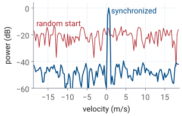
With the chirps synchronized, the hand’s energy collects into one peak at its velocity. With each chirp starting at a random time, the same energy spreads evenly over all 128 velocity cells, \(10\log_{10}128\) = 21 dB lower. The hand stays at its range, but the map no longer shows its velocity.
The Radar Data Cube
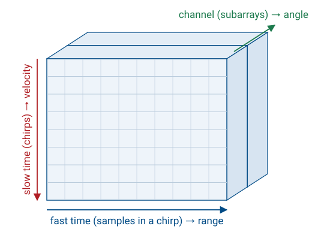
The samples of one burst form a block with three axes, the radar data cube, and each axis gives the radar one coordinate of a target:
Fast time runs along one chirp, the samples 0.25 µs apart on the teaching burst. Its beat frequency gives range, and the range FFT works along it.
Slow time runs across the chirps, the same sample of each chirp one PRI apart. Its phase step from chirp to chirp gives velocity, and the Doppler FFT and MTI both work along it.
Channel is the third axis. Each of the kit’s two subarrays records the whole burst, and the difference between the two gives angle, which Lesson 31 measures by monopulse.
This lesson works on one channel, one face of the cube. The capture’s iq array is that face, one row per chirp.

The figure is that face for one hand at 1.5 m closing at 0.6 m/s. Across a row the beat oscillates once every 33 samples, which sets the range; down a column the same sample oscillates once every 62 chirps, which measures the velocity.
The Phase From Chirp to Chirp
After the range FFT of every row, a target appears in the same range cell of every chirp, and that cell’s phase is set by the round trip in wavelengths:
A target closing at \(v\) is \(v\ T_\text{PRI}\) nearer at each chirp, so its phase advances by the same step every chirp. That steady advance is a tone in slow time at the Doppler shift of Lesson 26:
A closing target has a positive frequency, and an opening one a negative frequency. For the teaching burst’s hand closing at 0.6 m/s,
and a hand opening at 0.9 m/s gives −60 Hz. The left of the figure draws the hand’s phase stepping 5.8° a chirp. The right draws a target whose phase advances 240° a chirp, which The Velocity Axis takes up.
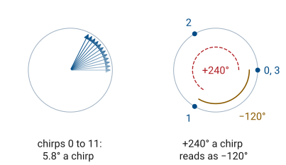
The Range-Doppler Map
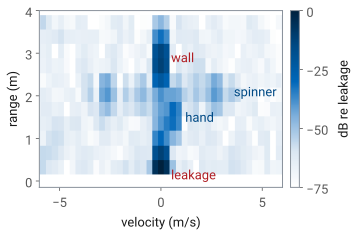
The second FFT, down each column, finds the slow-time tone in every range cell. The result is the range-Doppler map: range on one axis, radial velocity on the other, and the power of each cell. Positive velocity is closing, as in Lesson 26, so a hand pushed toward the kit lands at positive velocity, and checking that on your own map is the first test of the velocity axis.
The figure is a map of the teaching burst for a scene like the one in the L29 Lab. The kit’s leakage at 0 m and a wall at 2.9 m do not move, so both appear in the 0 m/s column, and they are the strongest returns on the map. A hand at 1.5 m closing at 0.6 m/s appears at +0.6 m/s. A fidget spinner at 2.1 m spreads into a band of velocities at one range.
A target lands in the range cell nearest it, and the cells fall where the range FFT’s bins fall. The bins are \(1/T\) apart in beat frequency, and the 0 m frequency \(f_0\) need not fall on one, so cell \(k\) is at
The map starts at the first cell at or beyond 0 m, so a return at 0 m shows there even when a cell just below 0 m is nearer. With the teaching burst’s 0 m frequency of 103 kHz, that first cell is the one at 105 kHz, 0.15 m out, and the cells run 0.15, 0.525, 0.90, … m. The leakage lands in that first cell, and the wall at 2.9 m lands in the cell at 2.78 m.
Both FFTs use a Hann window, as in Lesson 28, so the wall’s sidelobes in Doppler are 31 dB down instead of 13 dB and do not mask a slow target at the wall’s range. The window also makes each target’s spot about one and a half cells wide 3 dB down.
The Velocity Axis
The Doppler FFT of \(M\) slow-time samples, \(T_\text{PRI}\) apart, has bins \(1/(M\ T_\text{PRI})\) apart, which converts with \(v = f_D\lambda/2\) to the velocity resolution:
The slow-time samples come once a PRI, so the FFT tells apart only frequencies within \(\pm 1/(2T_\text{PRI})\). That sets the maximum unambiguous velocity, the \(v_\text{ua}\) of Lesson 26:
A faster target aliases by the full width of the window, \(2v_\text{max}\) = 37.5 m/s. At +25 m/s the phase advances 240° a chirp, which the FFT reads as −120°, as the right of the phasor figure shows, so the map reports \(25 - 37.5 = -12.5\) m/s.
Choosing the Burst
Teaching burst |
\(\Delta v\) (m/s) |
\(v_\text{max}\) (m/s) |
\(\Delta R\) (m) |
|---|---|---|---|
128 chirps, 400 MHz |
0.29 |
±18.75 |
0.375 |
32 chirps |
1.17 |
±18.75 |
0.375 |
160 MHz chirp |
0.29 |
±18.75 |
0.94 |
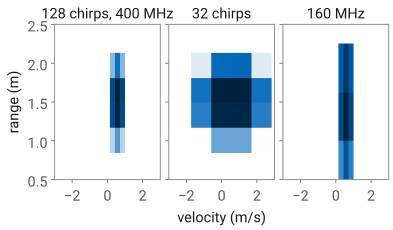
Each parameter of the burst controls one axis of the map. The number of chirps \(M\) sets the velocity resolution, so 32 chirps resolve 1.17 m/s. The chirp bandwidth sets the range resolution, \(c/2B\), so a 160 MHz chirp widens every target from 0.375 m to 0.94 m in range. The PRI sets the velocity limit. The L29 notebook makes a shorter burst from a long one by keeping only its first \(M\) chirps.
The chirp count also moves the noise floor. The provided range_doppler scales each FFT so that a target’s level stays where it is whatever \(M\) is, and the coherent gain of Lesson 27 shows up as a lower floor instead. Going from \(M_1\) chirps to \(M_2\) raises the floor by
when we keep 48 of the teaching burst’s 128 chirps.
A Spinner’s Micro-Doppler
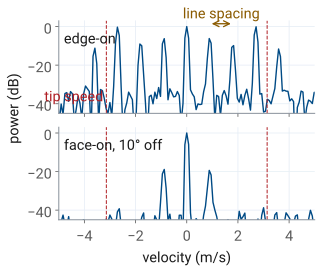
A fidget spinner held edge-on, its plane of rotation along the line of sight, moves each arm toward the kit for half a turn and away for the other half. Its echo covers every velocity out to the tip speed of an arm on a radius \(a\) turning at \(f_\text{rev}\) revolutions a second. For the spinner in the figures, with arms 2.5 cm from the hub at 20 revolutions a second,
The hub, and the hand that holds it, are at 0 m/s. The figure is four teaching bursts back to back, whose finer cells show the lines cleanly.
Three identical arms repeat their pattern every third of a turn, so the echo’s energy falls only on lines \(3f_\text{rev}\) apart in Doppler:
The outermost strong line is a little inside the tip speed. Face-on, the arms move across the beam, but a hand holds the spinner some angle \(\theta\) off face-on, so \(\sin\theta\) of the swing reaches the line of sight. At 10° off that is \(3.14 \sin 10° = 0.55\) m/s, less than one line spacing. The energy still falls only on the lines, so the band shrinks to the first line either side, ±0.90 m/s.
This is micro-Doppler, the Doppler of the parts of a target that move relative to its body. Lesson 31 uses it to tell one kind of target from another.
Short Windows: The Spectrogram
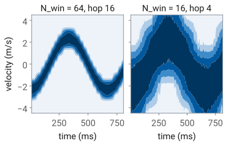
One map averages a target’s motion over the whole burst. A spectrogram shows it over time: the provided radar_lab.spectrogram takes one range cell’s slow-time signal in windows of \(N_\text{win}\) chirps, each a hop of \(N_\text{hop}\) chirps after the last. Each window is a short burst, so
The figure is a hand waved for 0.8 s at the teaching burst’s PRI. A 64-chirp window with a hop of 16 gives 0.59 m/s cells and a column every 6.4 ms; a 16-chirp window with a hop of 4 gives 2.34 m/s and 1.6 ms. A shorter window follows the motion more closely and blurs it more in velocity. Either way the band still reaches the target’s top speed, to within a cell.
Clutter at Zero Velocity
![The range-Doppler map of the teaching burst three times, with one color bar in dB relative to the leakage: with no MTI, with the 2-pulse canceller, and with the 3-pulse canceller, the leakage, wall, hand, and spinner labeled in the first. With either canceller the leakage at 0 m and the wall at 2.9 m drop to the noise floor. The hand at plus 0.6 m/s is fainter with the 2-pulse canceller and drops below the color scale with the 3-pulse, together with the floor around it. The spinner's outer lines survive and its center is removed](../../viz/img/L29-mti-maps.svg)
The second half of the lesson is MTI, which removes the returns that do not move. The leakage from the transmit antenna into the receiver, the walls, the table, and the stand return the same echo on every chirp. Radar engineers call these returns clutter. On the map they appear at 0 m/s, and in a lab room they are the strongest returns: in the map figure the leakage is 30 dB above the hand.
Clutter hides slow targets. Its Doppler sidelobes, and any small change in it from chirp to chirp, spread its energy onto the velocities near zero where a slow target is. The CFAR detector of Lesson 30 also sets its threshold from the cells around each cell, so a clutter ridge raises the threshold beside it. Moving target indication (MTI) removes the clutter before the range and Doppler FFTs.
The figure is the scene of the map figure with MTI off, with the 2-pulse canceller, and with the 3-pulse canceller, on one color scale. What to Expect at the Kit explains each change.
Pulse Cancellers
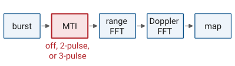
MTI comes before the range and Doppler FFTs. The app’s MTI setting and the notebook’s KIND choose one of three: off, the 2-pulse canceller, or the 3-pulse canceller.
The 2-pulse canceller subtracts the chirp before from each chirp, sample by sample. A stationary return is the same in both chirps, so it subtracts to zero; a moving target’s phase has advanced between them, so it survives. The 3-pulse canceller applies the same subtraction twice in a row, which removes more of everything near 0 m/s. ADI’s MTI Radar Processing lab uses the same two filters.

The subtraction removes clutter only as well as each chirp repeats the last. On the course’s recorded bursts every chirp repeats exactly, and the wall drops more than 100 dB. On a kit, chirp-to-chirp timing jitter and changes in the room limit the drop.
Canceller Response and Blind Speeds
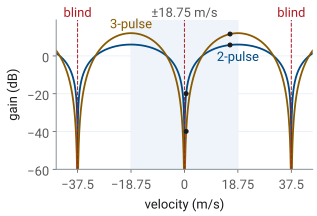
Between two chirps a target’s phase advances by \(2\pi f_D T_\text{PRI}\), and the difference of two equal phasors that far apart has a power gain of
The 3-pulse canceller is two of these in a row, so its gain in dB is twice the 2-pulse gain. On the teaching burst, with the dots in the figure:
Target |
\(f_D T_\text{PRI}\) |
2-pulse |
3-pulse |
|---|---|---|---|
hand at 0.6 m/s |
0.016 |
−20.0 dB |
−39.9 dB |
fast target at 16 m/s |
0.427 |
+5.8 dB |
+11.6 dB |
A slow target is deep in the notch at 0 m/s. A fast one near \(\pm v_\text{max}\) comes out stronger than it went in.
The gain is also zero wherever \(f_D T_\text{PRI}\) is a whole number \(k\): the phase then advances a whole number of turns a chirp, and the canceller removes the target as it removes clutter. Those are the blind speeds,
every 37.5 m/s for the teaching burst, twice \(v_\text{max}\); a target there aliases to 0 m/s. Nothing in the L29 Lab moves that fast.
What to Expect at the Kit
MTI changes each return in the lab by the canceller’s gain at that return’s speed:
The leakage and the wall drop to the noise floor, as far as the timing allows.
A pushed hand drops by the gain at its speed, −20.0 dB with the 2-pulse canceller at 0.6 m/s on the teaching burst, and twice that in dB with the 3-pulse.
The noise floor passes through the same filter. The noise in the hand’s own velocity cell drops with the hand, so the hand stands as high above its own floor as it did without MTI. Toward \(\pm v_\text{max}\) the floor rises by the canceller’s gain there.
A spinner keeps the lines of its fastest arms and loses its center.
A hand held still, or moved across the beam, still has a small radial speed. That speed stays below its peak most of the time, so the gain at the peak speed is the least the canceller removes. A motion \(A\sin(2\pi f t)\) along the line of sight, such as a tremor, peaks at \(2\pi A f\). For a tremor of 1 mm either way at 2 Hz,
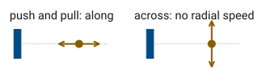
A hand moved a distance \(x = A\sin(2\pi f t)\) to the side at range \(R_0\) changes its range only by
so its radial speed peaks at
For 0.15 m either way at 1 Hz, 1.5 m out, that is 0.047 m/s, 3.1 Hz, and −42.1 dB. Both drop far more than the pushed hand at 0.6 m/s.
With strong clutter and fast targets, the 3-pulse canceller gives the cleanest map; for a slow hand, the 2-pulse canceller or none keeps more of the target.
Range-Doppler Explorer
The widget computes a map from the teaching burst: leakage at 0 m, a wall at 2.9 m, and a hand at 1.5 m whose closing speed you set, beside the canceller’s gain against velocity. Change the number of chirps and watch the hand’s spot and the floor. Move the hand past +18.75 m/s and watch it alias. Turn chirp sync off, then step through the MTI settings at a few speeds.
Summary
Range-Doppler |
Relation |
Teaching burst |
|---|---|---|
Doppler shift |
\(f_D = 2v/\lambda\), positive closing |
40 Hz at 0.6 m/s |
Range cells |
\(R_k = (k/T - f_0)/(2B/cT)\), from the first at or beyond 0 m |
0.15 m first, at \(f_0\) = 103 kHz |
Range resolution |
\(\Delta R = c/2B\) |
0.375 m; 0.94 m at 160 MHz |
Velocity resolution |
\(\Delta v = \lambda/(2M\ T_\text{PRI})\) |
0.29 m/s; 1.17 m/s at 32 chirps |
Maximum velocity |
\(v_\text{max} = \pm\lambda/(4T_\text{PRI})\) |
±18.75 m/s |
Floor and \(M\) |
\(10\log_{10}\) of the chirp ratio |
+4.3 dB keeping 48 of 128 |
Spinner |
edge at \(\pm 2\pi a f_\text{rev}\), lines \(3f_\text{rev}\) apart |
±3.14 m/s and 0.90 m/s |
Spectrogram |
cell \(\lambda/(2N_\text{win}T_\text{PRI})\), columns \(N_\text{hop}T_\text{PRI}\) apart |
0.59 m/s and 6.4 ms |
MTI |
Relation |
Teaching burst |
|---|---|---|
2-pulse canceller |
gain \(4\sin^2(\pi f_D T_\text{PRI})\) |
−20.0 dB at 0.6 m/s, +5.8 dB at 16 m/s |
3-pulse canceller |
twice the 2-pulse gain in dB |
−39.9 dB at 0.6 m/s, +11.6 dB at 16 m/s |
Nearly still |
gain at the peak radial speed, \(2\pi A f\) or \(\pi A^2 f/R_0\) |
tremor −53.5 dB; across the beam −42.1 dB |
Blind speeds |
\(v_\text{blind} = k\lambda/(2T_\text{PRI})\) |
every 37.5 m/s |
Pre-Lab
Part 1 of the L29 Lab packet is the shaded Predicted cells of its tables, worked at the Range + Velocity preset’s numbers, which the packet gives. The lesson above works each method on the teaching burst:
Packet table |
Predict |
Method |
Checked in |
|---|---|---|---|
A, the static scene |
where the leakage and the wall land |
Step 4 |
|
B, a hand |
the velocity and Doppler of a push and a pull |
Steps 5 and 6 |
|
C, a spinner |
the band’s edges, the line spacing, face-on |
Steps 7 to 9 |
|
D, chirp count and bandwidth |
\(\Delta v\), the floor, and \(\Delta R\) |
Steps 14 and 15 |
|
E, MTI |
each canceller’s gain on each return |
Canceller Response and Blind Speeds, What to Expect at the Kit |
Steps 10 to 12, 16 |
F, the spectrogram |
its cell, its column spacing, its band |
Step 17 |
Show your work for one row of each table on your own paper and attach it.
L29 Lab: Range-Doppler and MTI
Read a hand and a spinner on the range-Doppler map, then cancel the returns that do not move.
L29 Lab · Antennas, Phased Arrays, and Radar Systems · Dr. Neil Rogers
Learning Objectives
- I can process FMCW radar data to produce range, range-waterfall, and range-Doppler results.
- I can apply moving target indication (MTI) processing to distinguish moving targets from clutter.
The Big Picture
Read velocity, then cancel what does not move.
Steps |
Set |
Read |
Table |
|---|---|---|---|
1–4 |
clear scene |
leakage, wall |
A |
5–9 |
hand, spinner |
velocity, band |
B, C |
10–13 |
MTI |
levels |
E |
14–17 |
notebook |
cells, spectrogram |
D–F |
The Phaser app’s Range + Velocity preset sends one burst and draws its range-Doppler map. You read the static scene first, then a hand pushed and pulled along the line of sight, then a fidget spinner edge-on and face-on. You switch the app’s MTI between off, 2-pulse, and 3-pulse with the wall, your hand, and your still hand in the beam. After class the notebook runs the same chirp count, canceller, and spectrogram readings on the bursts you saved. Every reading fills a white Measured cell in the packet, beside the shaded Predicted cell you filled in from the lesson.
Predict First
Before you measure, predict each picture, then check yourself. Choose a target, an MTI setting, and a chirp count, and decide before you press Show map: where on the map the target lands, at what sign of velocity, how wide in velocity, and what the canceller does to it. Then show it. Any change hides the map again, so each guess comes first. The widget runs the lesson’s teaching burst, not the kit’s preset, so its numbers are not your Part 1 values; its pictures are the ones your kit should draw.
Bring Up the Kit
Tx on OUT2; Range + Velocity, MTI off, the Range-Doppler view.
Calibrate 0 m, then read the leakage and the wall.
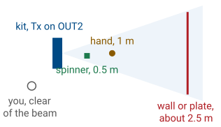
You need a wall or the L28 plate standing on its own about 2.5 m in front of the kit, a tape measure, a ruler, and a fidget spinner. The burst sees everything that moves in the beam, and your body is the largest moving return in the room, so step behind the kit or well to one side for every static and MTI reading; otherwise your breathing and sway appear as a smear of slow velocities at your range.
Connect. With the kit powered off, connect the transmit antenna to OUT2, then power it and wait for the Pi to boot. On your laptop open the radar app at
http://phaser-NN.local:8081, with your kit’s number for NN, and choose the FMCW tab.Calibrate 0 m. In the FMCW section, set Preset to Range + Velocity. Press Calibrate…, hold the plate against the array, wait for the strongest return to settle, and press Calibrate: the app writes your kit’s 0 m frequency into 0 m Beat (kHz). Or type your L28 Table A value there. The app measures every range on the map from this frequency, so a wrong value moves every return by the same distance.
Start the map. Leave MTI off, open the Range-Doppler view, and press Start. Velocity runs across, positive closing, and range runs up. Hover over any cell to read its velocity, range, and level in dB. Peak Range, Peak Velocity, and Peak Magnitude below the plot read the strongest cell that moves: they skip the cells within 0.3 m/s of zero, so read a static return by hovering. The colors run from each frame’s own peak down Color Span (dB), so read levels by hovering, never by color. The app’s levels sit about 18 dB below the notebook’s dBFS on the same burst, because the app windows each FFT with a Blackman window and scales it differently from
range_doppler; compare a change in dB between the two, never a level.Read the static scene. Step clear of the beam. Hover over the leakage, which sits in the first range cell at 0 m/s, and over the wall’s spot at 0 m/s, and record each range, velocity, and level, and the wall’s tape range. Compare each with your Table A prediction; a spot within half a range cell of it agrees. Press Save Capture: it downloads the current burst as
phaser_range_doppler_<date>-<time>.npz, 256 raw chirps whatever the MTI setting, so the notebook applies the canceller itself. Rename it for what it holds and move it into your Module 4 folder.
A Hand
A flat hand about 1 m out, at array height.
Push it in, then pull it out, along the line of sight.
Read Peak Range and Peak Velocity; save a push.
Moving the hand across the beam gives it almost no radial velocity, so keep it on the line of sight and at a steady pace.
Push. Stand to one side of the kit and push a flat hand straight toward the array from about 1 m, about half a meter in half a second. Record its range and velocity from Peak Range and Peak Velocity, and convert the velocity to its Doppler frequency, \(f_D = 2v/\lambda\). Repeat a few times and record a typical push. Your push will not be exactly 1 m/s, so compare its sign with Table B, and check that your Doppler equals \(2v/\lambda\) at the velocity you read. Press Save Capture during a push, with the wall still in view: the burst lasts 128 ms, so start the push before you press it and keep moving until it saves.
Pull. Pull the hand straight away from the array and record the same.
A Fidget Spinner
Measure the arm radius.
Edge-on, about 0.5 m out: read the band and its lines.
Face-on: read the band again.
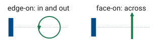
Measure the arm. Measure the spinner’s arm radius \(a\), from the center of the hub to the center of a weight.
Edge-on. Spin it hard and hold it by the hub, edge-on to the kit, its plane of rotation pointed at the array, about 0.5 m out at array height. A spinner with metal weights in its arms reflects more than an all-plastic one. Hover along the band’s row to read its range, the velocities of its two edges, and, where the lines within it are visible, their spacing; then work out the spin rate from the edge and from the lines. A real spinner slows as it runs, so read both within a few seconds of each other, and press Save Capture while it spins fast.
Face-on. Turn the spinner face-on to the kit and record where the band’s edges are now.
Cancel the Clutter
MTI off, then 2-pulse, then 3-pulse, at each return.
The wall with the beam clear, then a pushing hand.
A hand held still, then one moved across the beam.
Read every level here by hovering, at the return’s range: the wall at 0 m/s, a hand at its spot. Record the level with MTI off, and with each canceller the change from it in dB. After MTI the map rescales to the strongest thing left, so a weakened return can still look bright.
The wall. Step clear of the beam with MTI off and read the wall’s level. Turn MTI on with MTI Mode at 2-pulse, then 3-pulse, and read the same cell each time. If the return drops to the noise floor, record it as gone.
A pushing hand. Push your hand as in Step 5 and read its spot the same three ways.
Still, and across. Hold your hand still in the beam about 0.8 m out and read it the same three ways; then move it side to side across the beam at the same range, about 0.2 m either way, once a second, and do the same. Compare all four rows with your Table E predictions.
Restore. Turn MTI off.
Run the Notebook
Run it on your push burst.
Task (a): shorten the burst to 128, then 64 chirps.
Task (b): enter your predicted gain, then run 2-pulse and 3-pulse.
Task (c): the spinner’s spectrogram, 64- then 32-chirp windows.
Do this part after class, from your saved bursts, with the notebook set up as the Notebook Setup frame describes. Each task’s markdown cell states what to check, and each prints the numbers its step records. The notebook’s levels are dBFS, about 18 dB above the app’s hover levels on the same burst, because range_doppler uses a Hann window and divides each FFT by the window’s sum; compare changes between the two, never levels. The app’s presets all send 256 chirps of 500 MHz, so the 128- and 64-chirp rows are the first \(M\) chirps of your own burst, and the 200 MHz row is a recorded burst for everyone.
The chirp count. Open
L29_range_doppler.ipynb, setCAPTUREin the first code cell to your push burst from Step 5, and run the cells from the top. In task (a), run the chirp-count cell withM = 256, then change that one line toM = 128and toM = 64. Recorddvand the hand’s width 3 dB down for each, the floor atM = 256in dBFS, and the floor’s change from it at 128 and 64.The bandwidth. Set
CAPTUREtoL29_hand_closing_B200.npzand run the map cell again. Record the hand’s width in range, and setCAPTUREback to your own burst.The cancellers. In task (b), replace
H_DB = Nonewith the canceller’s predicted gain at the hand’s Doppler, in dB, and run the MTI cell withKIND = "2pulse"; then change it toKIND = "3pulse". Record the hand’s change beside yourH_DB, and the floor’s change near 14 m/s.The spectrogram. In task (c), set
SPINto your spinner burst and run its map cell, which prints the band’s lines; setR_SPINto the band’s range and run the spectrogram withN_WIN = 64, thenN_WIN = 32. Record the Doppler cell, the time between columns, and the band within 10 dB of its peak. Save the notebook with its edits and plots and upload the.ipynbwith the packet.
No Hardware?
Note
Every step works without a kit. Open the Phaser app’s simulator in a
browser,
livethisdream.github.io/phaser/radar:
the same radar app, with a Scene menu in its FMCW section and a pill that
reads Simulated. A Scene moves simulated targets live on the Range +
Velocity preset: hand waves a hand at 0.6 m, corners holds three corners
at 1, 2, and 3 m, and static holds a still target at 1 m with movers at 3.5
and 7 m. Load Capture plays one of the course’s recorded bursts through
the same views as if it were live, with the MTI switch working on it. Leave
0 m Beat (kHz) empty: a recording uses its own 0 m frequency, which the
Logs tab prints when it loads. The recordings are in the lab’s bundle,
L29_lab.zip, with the
notebook. They simulate the PHASER on the app’s preset, with a wall at
2.5 m; the simulation times the chirps perfectly, so the cancellers remove
the wall completely, which no kit does. Say in your packet which readings are
recorded rather than your own.
Steps 1 to 4 and 10:
L29_static.npzSteps 5, 11, 14, and 16:
L29_hand_closing.npz; Step 6:L29_hand_opening.npzSteps 7 to 9 and 17:
L29_spinner.npzandL29_spinner_faceon.npz; the arm radius is 3.0 cmStep 12:
L29_hand_still.npzandL29_hand_across.npzStep 15:
L29_hand_closing_B200.npz, the same for everyone
Notebook Setup
Download the lab’s bundle, L29_lab.zip, and unzip it into the Module 4 folder you set up in the L28 Lab’s Notebook Setup, with the same Python and packages. It holds L29_range_doppler.ipynb, a fresh radar_lab.py, the data README, and all eight recorded bursts, which the notebook opens by default, so it runs as shipped before you change anything. Move the bursts you saved with Save Capture into the same folder. Start Jupyter in the folder with jupyter lab and open L29_range_doppler.ipynb.
Your Part 2 Entries
This frame collects every box you filled in on this page. Your entries stay in this browser only, saved as you type. Download my packet writes them into Part 2 of the blank packet and saves the PDF; do Parts 1 and 3 on paper or in the PDF viewer, and upload one PDF to Gradescope with your notebook. If you have already typed Part 1 into the packet PDF, use Fill my own copy and choose that file instead: your Part 1 is kept, and Part 2 is added to it. Either way the result is locked, so finish any typing in the PDF first. Export entries saves a small backup file you can Import on another laptop or after clearing your browser. The boxes are optional: the blank packet is in the next frame, to fill on paper or in a PDF viewer instead.
Lab Packet
The L29 Lab packet is one submission, turned in complete before Lesson 30, with the notebook. It has three parts:
Part 1, Predict (before the lab period): the shaded Predicted cells of Tables A to F, at the Range + Velocity preset.
Part 2, Measure (your own kit, in class, and the notebook after): the white Measured cells of the same tables.
Part 3, Analyze (after the lab): three prompts about what you measured.
For Part 3
Part 3 asks you to compare your Table D readings at the three chirp counts with your predictions, to find your spinner’s spin rate every way Table C allows and say which you would report, and to compare what each canceller did to each return in Table E with your predictions. I grade each answer on a claim, your own numbers as evidence, the reasoning between them, and how large a difference your readings can resolve. For the final report, keep your bursts, your notebook, and your tables: the report asks you to explain, in your own words, how a burst of chirps becomes a velocity and what MTI does to a scene.
Looking Ahead
Lesson 30 decides which cells of this map hold targets, setting the threshold from the cells around each one, and the L30 Lab runs that detector on range-Doppler maps of this burst.